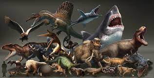

There are many fasinating extinct creatures. Extinct creatures make up 99% of all life that has ever lived on the planet and that is all of the animals that we have discovered. That number may change in a couple of years. Discoveries happen about once a week and the amounts that are already discovered is impresive.
In this website, you will see and learn about many animals that are now extinct and when they lived. Also you will learn some important things about the future of these amazing animals.
Image by DevianArt from DevianArt